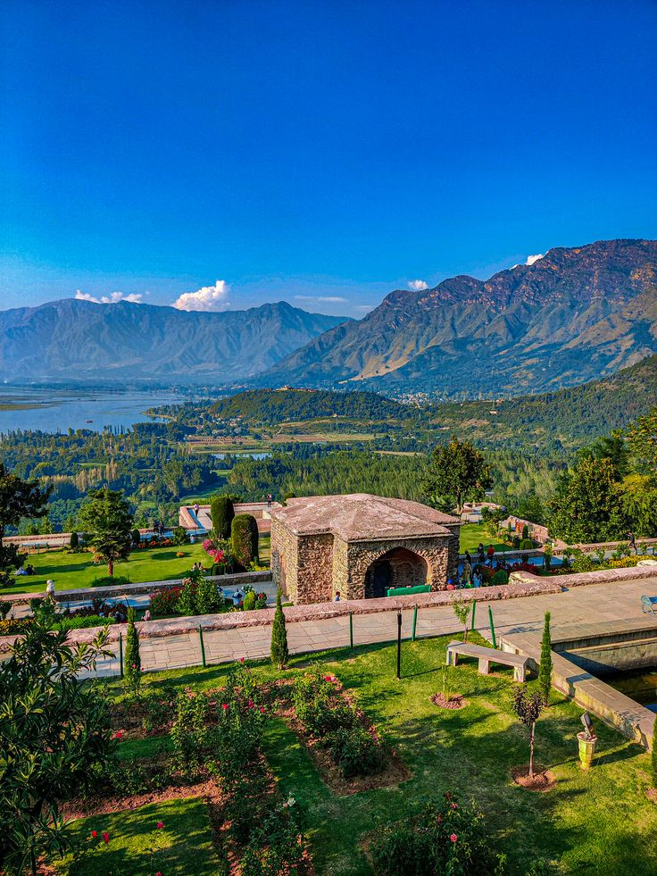

Defining Tourism
As per Britannica, tourism is sthe act and process of spending time away from home in puruit of recreation, relazation, and pleasure, while making use of the commercial provision of services. Click here for the complete article.
According to Wikipedia, tourism is travel for pleasure, and the commercial activity of providing and supporting such travel.Tourism can be domestic (within the traveller's own country) or international. International tourism has both incoming and outgoing implications on a country's balance of payments.
The English-language word tourist was used in 1772 and tourism in 1811. These words derive from the word tour, which comes from Old English turian, from Old French torner, from Latin tornare - "to turn on a lathe", which is itself from Ancient Greek tornos - "lathe". To read the full article, click here.
Tourism in Kashmir
People have visited Kashmir over the past centuries for various reasons, ranging from trade to tourism. Kashmir is known for its tourism worldwide; from the snowy mountains to the flowing rivers, from the bright blue sky to the lush green grasslands, Kashmir has it all. Tourists from all over the world come here and Kashmir's geography has adventures for all. Kashmir's varying climate, accompanied by the diverse geology provide opportunities for several outdoor activities like the shikara-ride, skiing, trekking, camping, picnics etc.


.jpeg)